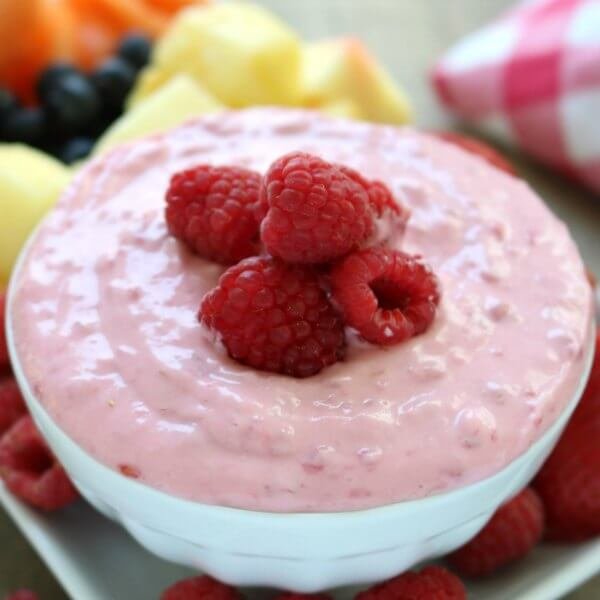

Home
Raspberry Dip

All my friends say it's amazing, and the best they've ever had
Ingredients
1 cup sour cream
1 (8 ounce) package Neufchatel cheese, softened
1/2 cup white sugar
1 tablespoon raspberry extract
½ cup fresh raspberries
Steps
- In a medium bowl, place the sour cream, Neufchatel cheese, white sugar and raspberry extract. With an electric mixer, blend until smooth. Chill in the refrigerator approximately 30 minutes. Garnish with fresh raspberries to serve.
- Enjoy!